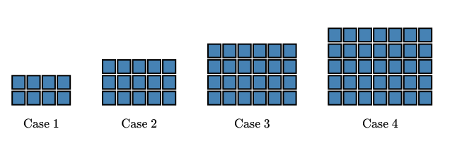
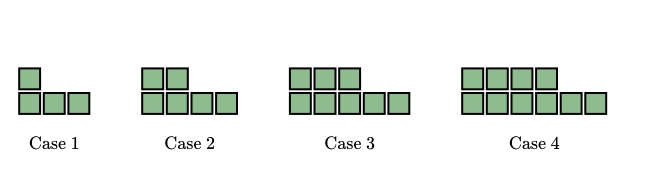
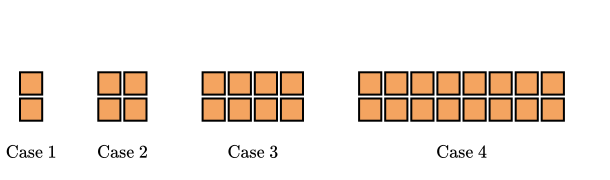

Objectives
-
I can recognize and identify key characteristics of a quadratic pattern represented in a table, graph, equation or application.
-
I can translate between different representations.



| \(x\) | \(0\) | \(1\) | \(2\) | \(3\) | \(4\) |
| \(y\) | \(3\) | \(4\) | \(7\) | \(12\) | \(19\) |
| \(x\) | \(0\) | \(1\) | \(2\) | \(3\) | \(4\) |
| \(y\) | \(1\) | \(6\) | \(15\) | \(28\) | \(45\) |
| \(x\) | \(0\) | \(1\) | \(2\) | \(3\) | \(4\) |
| \(y\) | \(5\) | \(15\) | \(45\) | \(135\) | \(405\) |
| \(x\) | \(1\) | \(2\) | \(3\) | \(4\) | \(5\) |
| \(y\) | \(12\) | \(6\) | \(4\) | \(3\) | \(2.4\) |